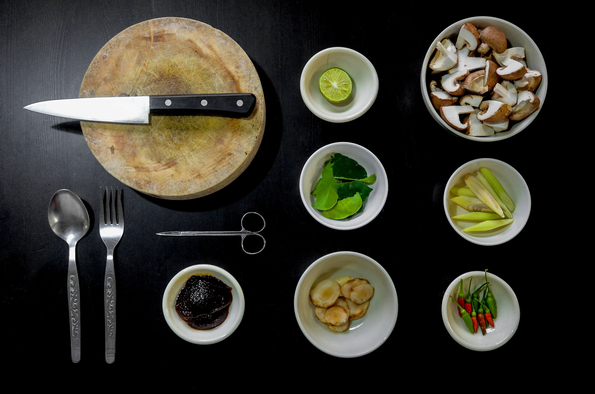

My Vacations/Activities are: Cooking, Listening to music, and Watching movies.
A study in the International Journal of Humanities and Social Science looked at the therapeutic qualities of cooking as a hobby, including its reported ability to cause a dimmed sense of time and an altered sense of consciousness. The researchers found that the act of cooking improves a person’s wellbeing and is associated with life satisfaction. Additionally, they discovered that cooking was the best predictor of subjective happiness. For some, time spent in the kitchen engrossed in baking and cooking may be exactly the recipe needed for greater happiness and mental wellbeing.---byMiNDFOOD
Studies have shown that music can buoy your mood and fend off depression. It can also improve blood flow in ways similar to statins, lower your levels of stress-related hormones like cortisol and ease pain. Listening to music before an operation can even improve post-surgery outcomes.by MARKHAM HEID
Watching a movie allows you to disconnect, relax, and have a good time. Film therapy uses scenes or entire movies to help people face fears. It helps them become aware of their fears so that they can work on overcoming them. It allows you to focus on your problems.---by exploringyourmind.com